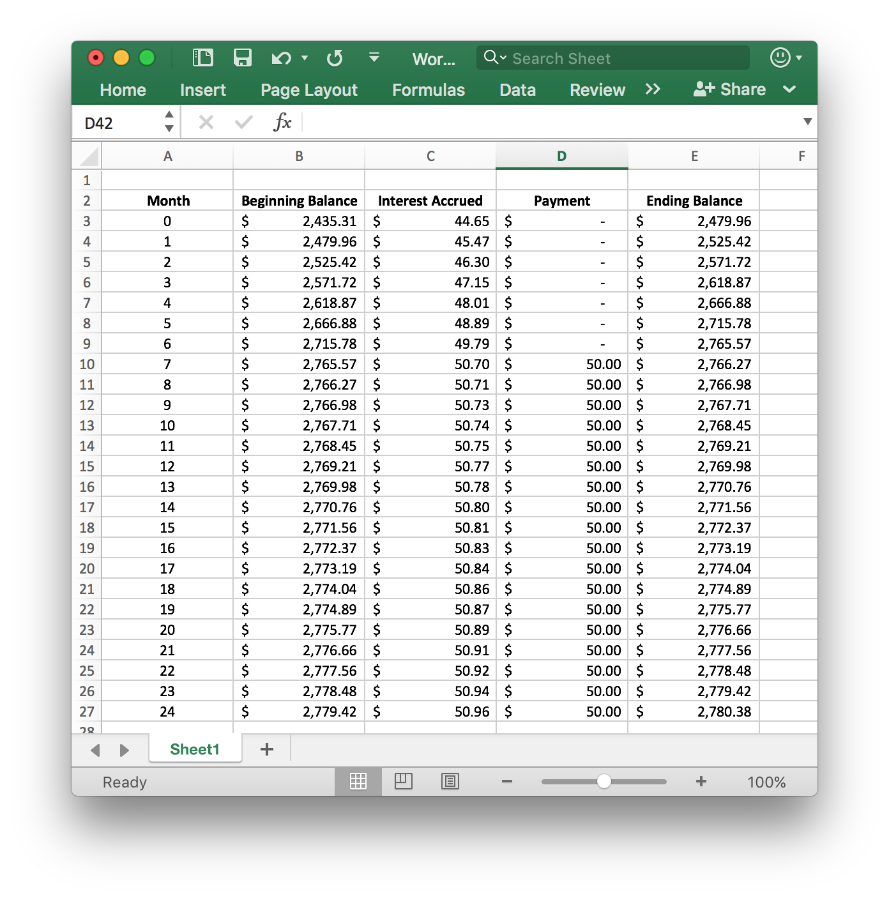

Lesson 13: Applying the Quantitative Reasoning Process
Opening Story
Lesson 13 - Opening story
(4:25 mins, L13 Opening Story Transcript)
Introduction
As we heard President Hinckley say in the introductory video: “You will be expected to put forth great effort and to use your best talents to make your way to the most wonderful future of which you are capable.”1 As you are completing this Math 108X course, we hope that you can see how the Quantitative Reasoning Process can complement your talents and magnify your efforts to improve your own situation in life and bless the lives of those around you.
The purpose of the Quantitative Reasoning Process is to assist in making good decisions based on a careful consideration of the problem, an analysis of the variables and assumptions that could affect the outcome, and the use of quantitative tools.

Quantitative Tools
We have learned a variety of tools that can be used to make informed decisions in our personal lives and in our families, church, and community activities. As we conclude the semester, let’s review the quantitative tools we have learned.
L13 - Interactive 1: Quantitative Tools
(L13-1 ADA Interactive Transcript)
This list is just the beginning of the quantitative tools that can be used to make decisions. As you continue your studies, you will learn more specific tools used in your chosen career. Adding more quantitative tools will increase the usefulness of the Quantitative Reasoning Process in making informed decisions in all areas of your life.
Foresight and Follow-Through
This week’s lesson focuses on the importance of foresight and follow-through. As we use the Quantitative Reasoning Process to make decisions, it is vital to consider the problem carefully and attempt to foresee the possible obstacles you might encounter. After making a decision it is essential to follow-through with the actions that are part of that decision.
A Lack of Foresight
In Lesson 11 we saw an example of a lack of foresight. Remember that Sophia and Emmy made a decision to take a motor boat to get back to their hotel from the Amazon jungle. As they used the Quantitative Reasoning Process they failed to consider the fact that the motor boat would not take them all the way to their hotel. This lack of foresight led to them making a less-than-desirable decision as they had to walk 5 extra kilometers to get back to their hotel. Hopefully, Sophia and Emmy, like the rest of us, will learn from their lack of foresight and be better prepared to foresee similar obstacles in the future.
While it is impossible to consider all future obstacles we might encounter, the Quantitative Reasoning Process helps us spend time considering variables and assumptions. We try to consider which assumptions might not be true, and consider unexpected outcomes that might arise.
The following case study is an example where lack of foresight affected the quality of the decision made through the Quantitative Reasoning Process.
Understand the Problem
Johanne loves the thought of traveling around the United States. Because travel can be expensive, a year ago she decided to make it a priority and put a travel category in her monthly budget. After carefully saving and planning, she now has $1,300 she can spend for a trip. Johanne is lives in South Carolina and is deciding among three options:
- A trip with three friends to visit the Oregon coast for 7 days.
- A trip alone to visit Washington D.C. for 10 days.
- A trip with her cousin to visit relatives in Miami, Florida for 5 days.
Identify Variables & Assumptions
Johanne identifies the following variables:
- Cost of travel
- Cost of lodging
- Cost of activities
- Cost of food
- Her interest in the location
She assumes that she will strictly follow whatever budget she sets for herself. She also makes the following assumptions in comparing the three travel options:
| Assumptions | Transportation | Lodging | Activities | Food |
|---|---|---|---|---|
| Oregon Coast | She would fly, then split the cost of a rental car with her friends. | Inexpensive, because they will camp on the beach. | Inexpensive, because they are mostly planning to spend time hiking and visiting the beach. | She will be able to pay for all her meals for $30 per day (7 day trip). |
| Washington D.C. | She can drive from her home. | Expensive, because she will have to pay for a hotel room by herself. | Inexpensive, most of the locations she wants to visit are free. | She will be able to pay for all her meals for $30 per day (10 day trip). |
| Miami, Florida | She can ride with her cousin and split the cost of gas. | Inexpensive, because she can split the cost of a hotel room with her cousin and stay with relatives on some nights. | Inexpensive, she will be spending much of her time with family. | Because she will be eating some meals with relatives, she will be able to pay for all her meals for $15 per day (5 day trip). |
Apply Quantitative Tools
Johanne does careful calculations of the costs for each potential trip. Based on her assumptions, she identifies the following costs:
| Cost | Travel | Lodging | Activities | Food | Total |
|---|---|---|---|---|---|
| Oregon Coast | $600 | $250 | $100 | $210 | $1160 |
| Washington D.C. | $150 | $1600 | $100 | $300 | $2150 |
| Miami, Florida | $80 | $150 | $100 | $75 | $405 |
She also considers where she would most like to travel. She decides her first choice is Washington D.C. because she has always wanted to visit the Capital. Her second choice is the Oregon Coast with friends and her last choice is the trip with her cousin. Although Johanne always loves spending time with her family, she has been to Miami many times in the past and wants to see someplace new. She also knows she will have opportunities to travel to Miami with her cousin in the future.
Make an Informed Decision
After reviewing her options, Johanne decides the cost of paying for her own hotel room in Washington D.C. makes it prohibitively expensive. Although the Florida trip is the least expensive, it is also her last choice.
She decides to use the money she has saved to travel to Oregon with her friends.
What are some things you think Johanne has failed to consider?
Evaluate Your Reasoning
As planning for the trip continues everything goes well. Johanne is excited to see the Oregon coast and is excited to travel with her friends. But as they arrive in Oregon, things begin to go differently from Johanne’s plans:
- At the car rental agency, the friends want more space in the car so Johanne and her friends decide to rent a more expensive car.
- The weather is very cold and rainy. Camping on the beach seems miserable, so they they decide to stay in a hotel.
- Because of the rain Johanne’s friends want to visit an aquarium and the Columbia River Maritime Museum. When it warms up they want to go on a whale watching excursion and a guided ocean kayaking trip. None of these activities were ones Johanne had planned to pay for.
- Johanne’s friends enjoy eating at expensive restaurants and Johanne spends close to $80 per day on food.
Although Johanne enjoyed the trip, she spent $600 more than she planned to spend. This caused her added stress and she realized she could not afford to travel again for a long time. As she made her plans, Johanne did not think enough about her friends’ spending behaviors and she did not ask them about their plans for activities on the trip. This lack of foresight made it hard to her to follow-through with her spending plan. It also affected her travel plans for the future. Hopefully, after reevaluating her assumptions and variables, she will use what she has learned to make better decisions about future trips.
The gospel gives us an important eternal perspective that is helpful in making informed decisions. In a BYU-Idaho devotional, President Russel M. Nelson noted: “You have been reserved for this particular time to accomplish your mission of mortality…You need to understand how really important you are in the eyes of your Maker. Most of you do not fully appreciate who you really are. And most of you do not fully foresee your future potential for greatness.” 2 As we begin to fully understand our divine potential and appreciate the Lord’s plan for us, we can better include foresight in our life decisions.
A Lack of Follow-Through
After applying the Quantitative Reasoning Process to make an informed decision, your work will go to waste if you don’t follow-through with the actions and the decision you made. Follow-through usually requires discipline, self-constraint, and financial modesty. As we live by the decisions we make through the Quantitative Reasoning Process we reap benefits from our informed decision-making process.
The following case study is an example where lack of follow-through affected the quality of the decision made through the Quantitative Reasoning Process.
Understand the Problem
Laura and Ian were recently married and just moved into a new apartment with no furniture. After shopping at local thrift stores they have found a few things to furnish their apartment, but they haven’t found a bed or a couch. They decide to spend some extra money to purchase a high quality bed and a comfortable couch that will last for a long time. The local furniture store is offering special financing. If Laura and Ian are approved for the store financing, they pay nothing at the time of the purchase and they won’t have a payment due for six months.
Identify Variables & Assumptions
Laura and Ian identify the following variables:
- The cost of the new bed
- The cost of the new couch
- The total loan amount
- The loan interest rate
- The total time to repay the loan
They make the following assumption:
- They can afford to make the minimum monthly payment.
Apply Quantitative Tools
The total bill for the couch, bed frame, and mattress they select, including taxes and the delivery fee, is $2435.31. Laura and Ian know that taking on debt can have big consequences. After asking more questions about the furniture store financing, they learn the interest rate is 22% and the minimum monthly payment is $50. They also learn that interest begins to accrue at the time of the purchase. This means that interests accrues during the first six months, even though they aren’t required to make payments.
They use Excel to create the following Amortization Schedule for the store financing:

As they looked at the amortization schedule, they noticed that during the first 6 months their account balance would go up from $2435.31 to $2765.57. This is an increase of more than $330. They also noticed that by month 7, the interest payments were slightly higher than the minimum payment of $50. If they only paid the minimum payment, they would never pay off the loan. After two years they would have paid $900, but would still owe $2780.38. They noticed that even after making payments for two years, they would still owe more than they originally borrowed.
Laura and Ian decide the store’s financing offer was not a good choice. They had a personal credit card with a lower interest rate of 12% that they could use. Using the payment (PMT) function in Excel they found that if they charged the new bed and couch to their credit card and made monthly payments of $114.64 they would have the furniture paid off in two years.
Make an Informed Decision
Based on their calculations, Laura and Ian decided to purchase the new furniture using their credit card. They knew they made a wise decision not to use the store financing and were confident in their ability to pay off the credit card. They felt sure the lower interest rate on their credit card would save them a significant amount of money over the interest they would have paid for the store financing.
They added monthly furniture payments of $114.64 to their budget.
Evaluate Your Reasoning
In the first few months, as Laura and Ian evaluated their reasoning, they were pleased with their decision.
Their use of the Quantitative Reasoning Process and their decision to avoid the store financing were good choices.
However, as time progressed, they did not follow-through with their decision. Here is a summary of what happened in the first year after they made the purchase:
- For the first two months, they faithfully made the $114.64 payments on their credit card.
- Month #3 was December and they used their credit card to purchase Christmas gifts. In addition to adding to the card balance, they only made the minimum payment on the card instead of the $114.64 they had planned.
- In January Laura noticed that Ian loved the amazing new TV their neighbors got for Christmas. Laura purchased the same TV for Ian’s birthday gift. It was even on sale. She charged the entire cost of the TV to the credit card.
- In February they overspent on eating out and a really expensive Valentines’ day dinner. They were only able to make the minimum payment on their credit card.
- In March they realized they were overspending and were careful to not add any new charges to the card. They made the planned payment of $114.64.
- In April, Ian used the credit card to purchase an expensive birthday gift for Laura. They only made the minimum payment on their credit card.
- For the rest of the year, they continued their pattern of overspending, not following their budget, and making only minimum payments on their credit card.
Over the first year, the balance on their credit card grew to $4,537. This was over the credit limit on the card and they were no longer able to use the card to make purchases. Because of the high balance, the minimum payment on the card increased. Laura and Ian could no longer even make the minimum payment each month.
Laura and Ian found themselves in an unfortunate situation with long-term consequences. In addition to financial consequences, like lowering their credit scores, their money situation brought added stress in their marriage. Their uncontrolled debt situation caused them to delay saving for retirement and starting their family. By taking on excess debt, Laura and Ian had made a significant financial mistake.
As Ian and Laura reviewed their decisions, they began to see what they could have done differently. They agreed that a good-quality bed was important, but the new couch was far less important. They made a mistake in logical reasoning by allowing an appeal to emotion to convince them to purchase expensive gifts and a Valentine’s Day dinner. The more money spent on gifts did not equal more love from the giver. They also saw that they should have pondered council from church leaders who had provided a warning about debt.
Ian and Laura plan to incorporate what they learned through their mistakes into the Quantitative Reasoning Process to make better decisions in the future.
President Gordon B. Hinckely said: “Debt can be a terrible thing. It is so easy to incur and so difficult to repay. Borrowed money is had only at a price, and that price can be burdensome.”3
President Thomas S. Monson counseled: “Avoid the philosophy and excuse that yesterday’s luxuries have become today’s necessities. They aren’t necessities unless we ourselves make them as such. Many of our young couples today…enter into long-term debt…It is essential for us to live within our means”4
In this example, Laura and Ian started out on a good path. They used the Quantitative Reasoning Process, they avoided expensive store financing, and they planned for the purchase in their budget. However, Laura and Ian made mistakes both in foresight and in follow-through. They didn’t foresee the difficulty they would have making the monthly payment of $114.64 to their credit card. They didn’t follow-through with their budget or avoid unnecessary purchases.
A Gospel Perspective
When we use the Quantitative Reasoning Process with a gospel perspective our decision-making becomes better and more insightful.
As we ponder the problem in Step 1 of the Quantitative Reasoning Process, we should seek guidance from the Lord. Step 5 of the Quantitative Reasoning Process, in particular, provides us with an opportunity to incorporate gospel principles as we ponder, review, and evaluate our decisions.
As we evaluate our reasoning in Step 5 of the Quantitative Reasoning Process, we should pray about our decision and confirm that our decision is consistent with the advice and counsel in the scriptures and from prophets and church leaders.
The case study about Laura and Ian’s furniture purchase is an example of failing to follow important advice from our church leaders.
Earlier in the semester, we saw a video of Henry J. Eyring, President of BYU-Idaho, who shared a personal experience where he made a decision to follow advice he heard in conference to get out of debt even though his decision did not align with the best financial council of the day (you can re-watch this video here). His story is a good example of the blessings that come from following the advice of our church leaders.
President Thomas S. Monson said: “Remember that ofttimes the wisdom of God appears as foolishness to men, but the greatest single lesson we can learn in mortality is that when God speaks and a man obeys, that man will always be right.” 5
It is also essential to seek personal revelation as we make decisions about our life. President Russell M. Nelson said: “We live in a world that is complex and increasingly contentious. The constant availability of social media and a 24-hour news cycle bombard us with relentless messages. If we are to have any hope of sifting through the myriad of voices and the philosophies of men that attack truth, we must learn to receive revelation.”6
In step 5 of the Quantitative Reasoning Process we evaluate our reasoning. This step of the process gives us a chance to seek personal revelation and the guidance of the Holy Ghost in order to ensure that the decision we have made is wise and in keeping with the Lord’s will for our lives.
Applying the Quantitative Reasoning Process
Our goal in teaching the Quantitative Reasoning Process is to equip you with a sound way to make better, more informed decisions. As you leave this class we encourage you to think about the decisions you will need to make in the next few years and consider how the Quantitative Reasoning Process might help.
What decisions do you have coming up in the next few years where the Quantitative Reasoning Process will be helpful?
As you make decisions in your life, both big and small, we encourage you to use foresight and to include a gospel perspective in the Quantitative Reasoning Process. Pray for confirmation about your decisions and ensure that they are consistent with the advice of our church leaders. Finally, as you act on your decisions, remember that follow-through and regular reevaluation are vital.
Lesson Checklist
By the end of this lesson, you should be able to:
- state the steps of the Quantitative Reasoning Process.
- use the quantitative tools taught in this course as part of the Quantitative Reasoning Process.
- explain the importance of foresight in the Quantitative Reasoning Process.
- explain the importance of follow-through in the Quantitative Reasoning Process
- explain the importance of a gospel perspective in the Quantitative Reasoning Process.
- plan to apply the Quantitative Reasoning Process in your life.
April 2004, Stay on the High Road↩
“The Lord Uses the Unlikely to Accomplish the Impossible”, Russell M. Nelson, BYU-Idaho Devotional Address, January 27, 2015.↩
“Though Shalt Not Covet”, Ensign, March 1990, page 4.↩
“Constant Truths for Changing Times”, April 2005↩
“Constant Truths for Changing Times”, April 2005↩
- “Revelation for the Church, Revelation for our Lives”, Russell M. Nelson, April 2018 General Conference
© 2020 Brigham Young University - Idaho ↩